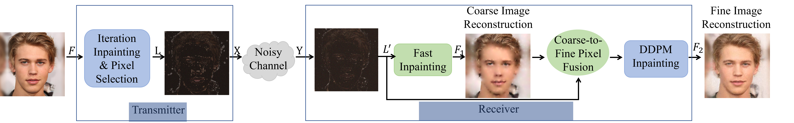

This paper introduces an innovative approach to the semantic transmission of visual data over wireless networks, leveraging image inpainting to restore missing or distorted regions. At the transmitter, we utilize a novel pixel selection technique to detect and send semantically significant characteristics, increasing communication efficiency without compromising the quality of the image. At the receiver, we employ a blend of rapid inpainting methods with diffusion models (DDPM) to achieve high-definition image reconstruction. This combination results in outclassing traditional methods like Deep JSCC, particularly in terms of objective image quality and transmission efficiency. Against our previous generative method, while there is a slight decrease in data transmission, there are considerable improvements in objective evaluation metrics and a slight enhancement in the subjective ones. Notably, our approach obviates the need for predefined semantic segmentation models through the incorporation of traditional inpainting methods, thereby offering exceptional versatility across a wide array of applications. Moreover, the system exhibits robust performance even under high-noise environments.
